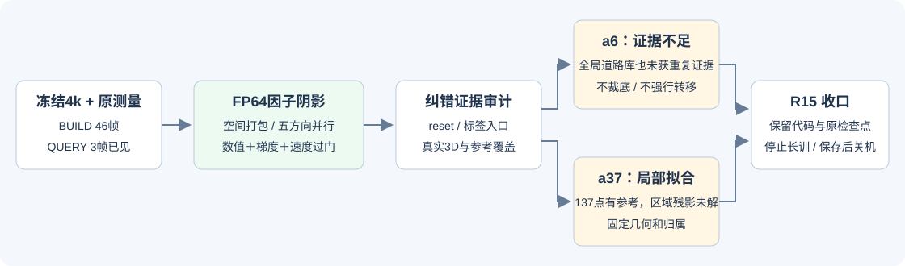
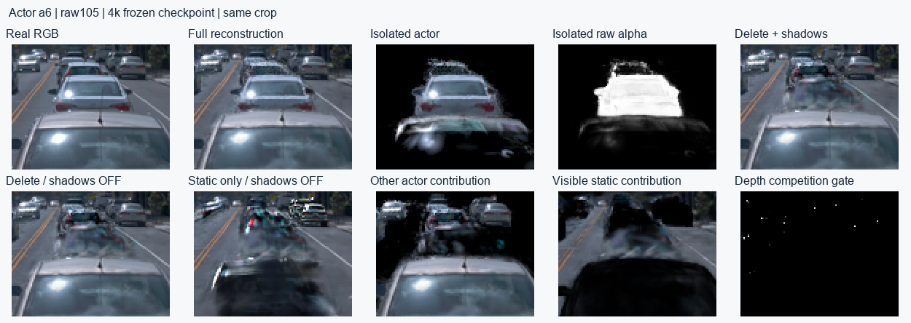
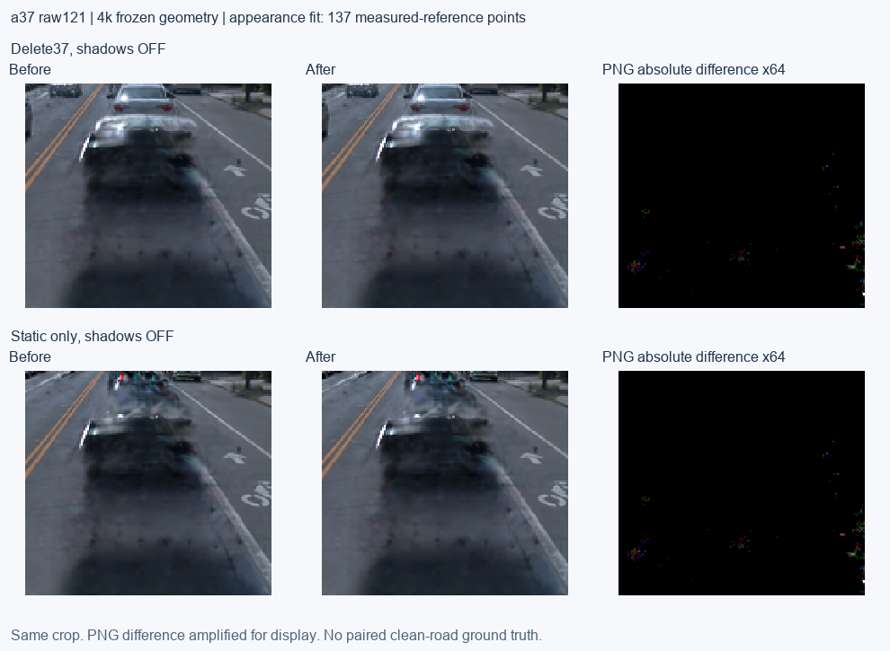

2026-10-18 / R15原分支内有限实验 / 未使用subagent
最新旧5对照：旧GN11 30K＋五实例30K已完成，含五身份视频及a6/a37直接对照；旧5／原R15三维归属与真实支撑。本页历史实验与电源记录保留。
阴影计算与主要执行瓶颈已修复验证；a6／a37仍未通过质量收口
同4k模型、同帧raw107、同5方向、完整损失的前向＋反向：18.53秒 → 2.51秒，约7.39倍。FP64局部因子实现通过预定数值与梯度门。
独立实测证据仍不足以可靠修改a6归属；a37稀疏外观拟合没有消除区域车形残影。因此保留本轮最小计算修复，不继续45K长训，也不另开R16／R17。

数值：从不可靠的FP32协方差逆，改为局部因子积分
新实现从原始旋转、主轴尺度和真实Actor姿态构造白化因子，不再求病态FP32世界协方差的逆；横向距离由叉积计算。保留原opacity→密度近似、全部有效caster、5个太阳方向、接收网格与所有旧监督。10sigma聚合块粗筛先对无粗筛参照验收，之后才测性能。
| 验收 | 实测结果 | 范围 |
|---|
| CPU独立积分、极端尺度、分块、批处理及gradcheck | 8项通过；远端原2.2.2+cu118环境也通过 | 小合成特例，含条件数10¹⁰，不替代真实规模。 |
| 真实场景透射率 | 选定FP64实现最大绝对误差 2.973e-08，小于1e-5门槛 | raw107全部317接收点×5方向；另5个BUILD帧各16点；全部有效caster。 |
| 独立FP64物理协方差参照 | 与因子参考一致，误差门通过 | 同接收点和实际主轴因子，原始FP32逆不能当参照。 |
| 真实梯度子集 | 六类参数最大相对L2误差 1.176e-14 | 4040个贡献／条件数／opacity分层点、10条射线；记录非零梯度，不是全零测试。 |
| FP32打包候选 | 全raw107测试最大误差约1.103e-5，超过预定1e-5门槛，未采用 | 首轮32射线通过不能替代扩展验收；没有事后放宽门槛。 |
数值验收覆盖6个BUILD帧，未声称49帧全部射线均完成FP64核对。渲染与计算差异不是从新模型训练出的质量收益；4K中既有错误梯度历史仍存在。
性能：最昂贵路径已显著下降，完整训练经济性仍未解决
采用Actor内空间排序、一次性射线－块候选提取、五方向打包和较大重计算单元。相同raw107的完整F+B减少86.5%；6个固定BUILD帧的中位数为2.305秒，最慢帧中位数2.580秒。lr=0且加载原Adam状态的端到端探测约2.47秒；未更新模型权重。
material/joint仅是冻结4k容量的各一次探测，尚无后期body teacher，不能当成未来实际吞吐。joint已约9.79秒、15.90 GiB，超过预先14GiB几何阶段的保守显存预算；未来还要承担Adam和teacher。按冻结容量把阶段探测机械外推也会达到40小时量级，仅用于说明不能恢复长训，不是完整训练时长预测。
| 原问题 | 本轮状态 |
|---|
| P0 数值失稳 | 局部因子FP64候选在登记范围内通过；原生产入口仍暂停，未静默替换默认模型。 |
| P0 碎片化调度；P1 串行太阳方向／小checkpoint | 用同一紧凑调度方案共同改善，完整F+B同帧约7.4倍；没有减少太阳样本或删caster。 |
| P1 Actor增密、重复光栅及76通道／43路alpha | 保留，尚未修。点数仍2,068,305；旧光栅与数据路径构成剩余约1.6秒底座，不把它包装成正常必然成本。 |
| P2 数据／配置／距离图、周期审计与保存 | 未改；属于剩余或间歇成本。原审计数据仍保留；这轮没有为了小项继续扩大补丁。 |
归属审计：reset确实改变漏斗，但a6还有更早的证据缺口
在同一4k几何的副本上执行实际opacity reset，分别重跑46个BUILD帧完整alpha*T。a37原有2个混合候选在reset后变0；道路贡献总量从15.49降到3.23。a6在两种状态下道路贡献均为0。reset也会揭露原被遮挡的静态点，因此不是把所有证据简单线性缩小。历史pre_owner3000仍是post-reset，不冒称找回pre-reset数据。
静态转a6／a37的原来源标签入口均为0。去掉标签门后有8／12165个静态重复车身贡献候选，但它们包含真实背景，不能仅凭车身投影贡献转归属，仍必须通过独立实测证据检查。
a6：没有强行执行拆分或归属转移
a6原局部候选库的道路正样本数为0。本轮把全部14589个独立实测世界道路样本，按各自来源时刻的真实a6轨迹变换到canonical坐标，打开新的提议入口。只有13个Gaussian与道路点落入宽阶段3σ范围，没有候选通过至少3个来源时刻的道路支持；混合拆分、道路归属转移实际仍为0。
这说明原纠错模块没有可用入口；扩展入口后，现有数据仍不足以证明这些外延是道路。不能把可见碎片自动当道路真值。未知点保留，未按高度裁掉车底，未冒称a6资产已修好。

此图为暂停4k时保存的原诊断分层，用于定位现有外延；本轮a6几何未修改，不能当作修复后结果。
a37：局部拟合可以成功，但不能解决没有观测覆盖的区域残影
| 真实证据漏斗 | 数量 |
|---|
| 删a37后参与原车身区域的静态候选点（含正确背景，不等于错误点） | 71746 |
| 距独立实测世界道路≤6cm且道路支持重复≥3 | 9500 |
| 有≥3次真实可见RGB／深度一致观测 | 150 |
| 通过原亮簇参考规则 | 137（75道路点、62静态非道路点），占候选点约0.19% |
只对这137点的albedo／SH外观做200次小步拟合，几何、owner、opacity、光照和其他点都冻结。参考点MSE下降98.18%，但49帧删除画面中，原车身区域只有314/556034像素的平均通道变化超过1/255；raw121对应车身区域一个像素也没超过该阈值。它是局部训练参考误差下降，不是98%的残影被消除。

49帧全景PSNR平均变化约0.000085dB，7辆车逐帧车身MAE最大相对恶化约0.000062%；几何／alpha覆盖不变。此控制没有损伤车体，也没有解决区域车形残影。没有配对干净背景GT，稀疏亮簇参考仍是先验而非真值。
本轮停止条件与交付范围
数值和几何阶段性能门通过；a6归属证据不足，a37局部外观控制缺乏区域覆盖、没有实质区域收益。因此Q01整模型多臂200步短训的前提不满足，已跳过；没有运行组合臂或重启45K。完成的49帧是本次稀疏外观控制前后评价，不冒称最终49×65编辑验收。BUILD46帧形成全部证据；3个已见QUERY只作固定报告，非独立未见测试。
保留原始4k完整checkpoint与Adam/RNG、输入证据和暂停标记。外观小补丁保存在服务器和本地中间目录，未覆盖原检查点，也不作为解决方案默认采用。阴影修复通过packed_shadow.install(model, dtype=torch.float64)接入模型副本；所有实测都使用此同一入口。原生产训练控制器没有恢复。
预算上限是180分钟，门槛未通过不自动消耗剩余额度。GPU工作结束后已保存并推送。2026-10-18 04:37（新加坡时间）执行AutoDL自带关机入口，命令返回0，随后SSH连接被服务器关闭。关机记录与关机前空闲／保存核验已落盘。
结论JSON · 数值与梯度 · 完整计时 · 候选漏斗 · a6实测3D提议 · a37控制与49帧指标 · 修复代码
task WS-V82-R15-CLOSURE-20261018；failure_ledger_refs V82-F01/F05/F06；更新既有F05/F06，不新增失败编号；human_verdict=null，problem_solved=null。旧质量基线仍指GN11从原测量30K＋实例30K，约3小时；本轮未重训旧模型，未用18K道路修补版替换基线。